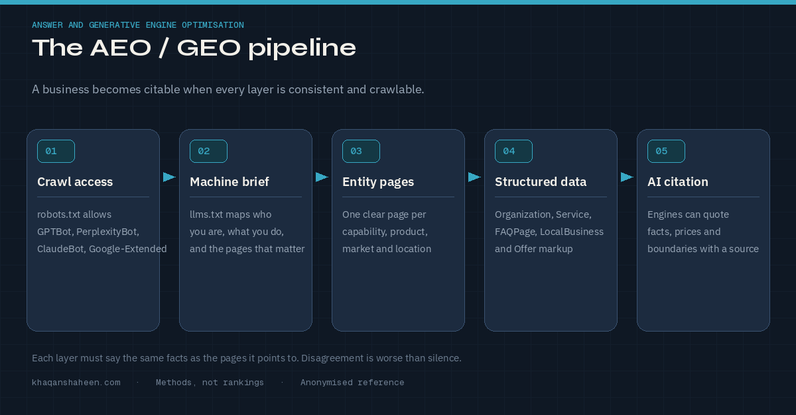

How I made a mould-making company citable in AI search
A precision mould-making company in Dubai had a familiar problem for specialist manufacturers. The work was technical — high-cavitation closures, two-shot tools, medical and packaging moulds — but the public site still behaved like a brochure. A sales engineer could explain the difference in a minute. A search engine, and now an answer engine, could not.
Buyers now ask ChatGPT, Perplexity, Gemini and Google AI Overviews who can build a particular tool, in which country, to what standard, and whether there is support in their time zone. If the site does not say those things in a form a model can retrieve, the model invents a neighbour or stays vague. This article is about the methods I used so a mould maker could be cited accurately. It does not invent rankings I have not measured.

Context
The company builds injection moulds rather than the plastic parts themselves. Its buyers are OEMs and moulders in the UAE, the wider GCC, and export markets, including the United States. Their questions are specific: who makes two-shot tools, who can validate a medical mould, who supports a North American buyer after shipment. Those questions only get a useful answer if the site has a stable identity, one page per capability, and a short machine-readable brief that agrees with those pages. That is AEO and GEO in practice. It sits on top of ordinary technical SEO; it does not replace it.
The problem
Three gaps kept showing up.
The first was crawl policy. A default robots.txt that only blocks /wp-admin/ does not forbid GPTBot, PerplexityBot, ClaudeBot or Google-Extended, but it also does not name them. Some teams later add blanket Disallow rules for AI bots without noticing. I wanted the policy to be explicit: public pages may be fetched; administration paths may not.
The second was the absence of a briefing a language model could read in one request. HTML homepages are full of navigation, scripts and repeated chrome. An llms.txt file, as specified at llmstxt.org, is a short Markdown map: a name, a summary, and the links that matter.
The third was entity structure. Capabilities lived in conversation and in sales decks. They needed their own URLs, titles, meta descriptions, and schema, so a model retrieving "bi-injection moulds" landed on a page about that process, not a generic factory hero image.
What I did, technically
Crawl access
I left public URLs open to standard and AI crawlers, kept administration paths closed, and pointed robots.txt at the XML sitemap. Named allows for the major AI user-agents belong in the same file so a later plugin change cannot silently close the door. A sitemap of a few dozen indexable URLs is enough for a specialist manufacturer. Completeness matters more than volume.
A machine-readable brief
I published /llms.txt as text/plain. The shape follows the public specification: an H1, a blockquote summary, then curated sections for capability pages, market pages, and a short optional list.
# Precision tooling manufacturer
> Dubai-based maker of injection moulds for medical, packaging
> and industrial buyers in the UAE, GCC and export markets.
## Capabilities
- [Two-shot and bi-injection moulds](https://example.com/2k): overmoulding, core-back and rotating-core tools.
- [High-cavitation closure moulds](https://example.com/closures): hot-runner closure and cap tools for high-volume production.
## Markets
- [United States buyers](https://example.com/us): validation, support and commercial terms written for US moulders.
A plugin can generate a first draft of this file. That is useful, and it is not finished work. Generated files often repeat the same post, include privacy policy pages a model does not need, and treat the sitemap as a substitute for curation. I treat the file as a briefing I would give a new engineer on day one, and I keep it consistent with the live pages.

Entity pages, not a single brochure
Each important capability got its own page: two-shot tools, high-cavitation closures, thin-wall and family moulds, unscrewing and collapsible-core tools, medical and packaging applications, maintenance, metrology and validation. Export buyers got market pages, including an English page for US moulders and a Spanish-language page for a Latin American market. Each page has a descriptive title, a meta description that states the offer, and an H1 that matches the query a buyer would actually use. Internal links run from the homepage and about page to these URLs, and between related processes, so a model that retrieves one page can reach the neighbouring entities without guessing.
Structured data
On the organisation itself I used Organization markup with a legal name, an alternate trading name, a Dubai postal address, contact points for the regions actually served, sameAs links to official profiles, and a knowsAbout list that matches the capability pages. If there is no page for a process, it does not belong in knowsAbout.

On capability pages I added Service markup that names the service in the same language as the visible copy, points at the organisation as provider, and states the audience and markets served. A US-facing landing page carries FAQPage markup for the questions American buyers actually ask — lead times, validation, support, commercial terms — with answers that also appear as visible text.
{
"@context": "https://schema.org",
"@type": "Service",
"name": "High-cavitation closure mould manufacturing",
"serviceType": "High-cavitation closure mould manufacturing",
"provider": { "@id": "https://example.com/#organization" },
"areaServed": { "@type": "Country", "name": "United States" },
"audience": {
"@type": "Audience",
"audienceType": "OEM manufacturers and product companies"
}
}
The logo field needs a real file URL; I would rather omit it than point at a page fragment.
How AI engines pick this up
Answer engines retrieve sources, then generate a sentence. They prefer pages that state a clear entity, a capability, a place, and a constraint. llms.txt is a hint, not a contract. Whether every major model fetches it on every query is still an open question, which is why the HTML pages and the schema have to stand on their own. The practical path is simple. A crawler is allowed in, finds a sitemap and a brief, and fetches a capability page whose title, H1, body and Service markup all describe the same process. If two of those layers disagree, the model has a reason to distrust both.
Results I can actually verify
I can verify the technical layer. Public pages are crawlable. /llms.txt is served as plain text and lists the capability and market pages. The sitemap contains on the order of thirty indexable URLs, each a real page. Organisation, Service and FAQPage markup is present where it is needed, with meta descriptions and canonicals. The site is served over HTTPS through a CDN, and cached HTML in this audit came back quickly. In conventional web search, the company's own pages appear for its brand and for specialist queries such as injection-mould manufacturing in Dubai, alongside other regional toolmakers. I cannot, from this audit, query ChatGPT, Perplexity or Google AI Overviews and report a citation rank or a lead count. Those numbers need the company's screenshots and logs.
Lessons
Specialist manufacturers win in AI search by being specific. A page called "two-shot bi-injection moulds", written for the engineer who will issue the RFQ, can be retrieved and cited. Curate the machine brief: a generated llms.txt is a start, but duplicates and policy pages waste the context window. Keep every public fact in one place of truth. And do not confuse a single Spanish landing page with a multilingual system; it is useful, but it is not a substitute for hreflang if you later publish full language versions.
Common questions
Does publishing llms.txt guarantee a citation in ChatGPT or Perplexity?
No. It makes the site easier to interpret when a model fetches it. The HTML, the sitemap and the structured data still have to be correct, and the company still has to be a reasonable answer to the question.
Should every product variant get its own URL?
Only when it is a real capability a buyer would search for, with enough distinct content to stand alone. Thin copies, with one noun swapped, dilute the entity.
Is ordinary SEO still required?
Yes. Canonicals, crawl access, readable titles, internal links and a clean sitemap are the floor. AEO and GEO make the same facts usable inside a generated answer.